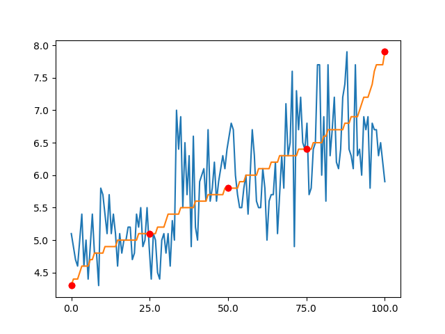

Je l'ai évoqué l'autre jour, sans prendre le temps de le définir : le percentile.
Il s'agit d'une valeur qui permet de séparer les données en deux catégories : celle qui sont plus grandes, et celles qui sont plus petites, en fonction du nombre de données présentes dans chaque catégorie
Par exemple, le vingtcinquième percentile est la valeur qui est définie telle que 25% des valeurs sont plus petites, et 75 valeurs sont plus grandes.
Le 50ème percentile est habituellement appelé la médiane.
J'ai repris le dataset Iris, et j'ai pris en particulier la longueur du sépale.
J'ai tracé la valeur de chaque point (en bleu).
J'ai tracé la valeur de chaque point, après avoir trié les données (en orange)
Les points rouges correspondent aux percentiles:
0% : il s'agit donc de la valeur minimum
25% : un quart des données sont plus petites, trois quarts sont plus grandes
50% : c'est la médiane
75% : un quart des données sont plus grandes, trois quarts sont plus petites
* 100% : c'est la valeur maximum

Tu veux poursuivre l'aventure ?
Inscrit-toi pour ne rien rater des prochaines escales !